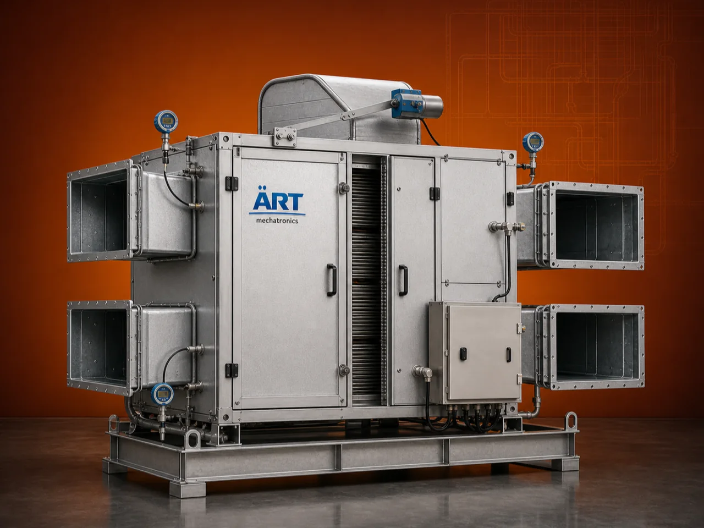

Heat Recovery Unit (Waste Heat Recovery System for Energy Efficient Industrial Processes)
A Heat Recovery Unit (HRU), also known as a Waste Heat Recovery System, is an advanced energy-saving solution designed to capture and reuse heat from exhaust gases or process waste streams, improving overall system efficiency and reducing fuel consumption.

About the Heat Recovery Unit - Hru (HRU)
In many industrial processes, a significant amount of heat is lost through exhaust gases, flue gases, or hot air discharge. Heat recovery units reclaim this energy and reuse it for preheating air, heating fluids, or supporting process operations, resulting in substantial cost savings and reduced environmental impact.
Heat recovery systems are widely used in industries such as food processing, chemicals, pharmaceuticals, textiles, cement, metals, and manufacturing, where continuous heating and energy optimization are critical.
ART Mechatronics offers high-performance heat recovery units, engineered for maximum energy savings, efficient heat utilization, and reliable industrial performance.
One machine, many names
Buyers search for this equipment under many terms — we manufacture all of them:
Working Principle of Heat Recovery Unit
Recovered heat is used for:
Types of Heat Recovery Systems
Industries Using Heat Recovery Unit
⚗️ Chemical Industry
- Process heat recovery
🍃 Food Processing Industry
- Dryer and oven exhaust
💊 Pharmaceutical Industry
- Controlled heating systems
🏗️ Cement & Metal Industry
- Furnace heat recovery
🧵 Textile Industry
- Heat reuse
🏭 Manufacturing Industry
- Energy optimization
Features & Advantages
- Significant energy savings
- Reduced fuel consumption
- Lower operating costs
- Improved system efficiency
- Environment-friendly operation
- Easy integration with existing systems
- Quick return on investment (ROI)
Technical Highlights
- Heat Source: Exhaust / Flue gas / Hot air
- Heat Transfer Type: Indirect
- Construction: Mild Steel / Stainless Steel
- Efficiency: High heat recovery rate
- Integration: With boilers, dryers, furnaces
- Operation: Continuous
Turnkey Heat Recovery Solutions
ART Mechatronics offers:
- Complete heat recovery system design
- Integration with existing equipment
- Heat exchanger and ducting systems
- Installation & commissioning
- After-sales service & AMC
Why Choose Art Mechatronics
- Expertise in energy-efficient systems
- Customized solutions for different industries
- High-performance and durable equipment
- Proven cost-saving results
- Reliable industrial performance
Applications
- Boilers
- Furnaces
- Dryers
- Hot Air Generators
- Industrial Ovens
Related Heating & Drying machines
Get pricing & specs for the Heat Recovery Unit - Hru (HRU)
Share the product, target capacity, current process and plant location. These details help our engineers discuss the right machine or line configuration.
One partner, from design to start-up
ART Mechatronics designs, manufactures, installs and commissions your Heat Recovery Unit - Hru (HRU) solution with regional presence in India, UAE and Thailand.